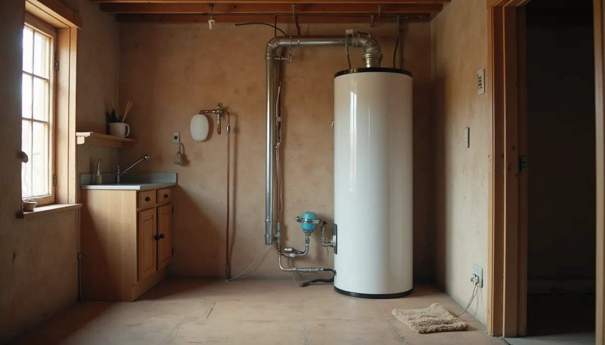
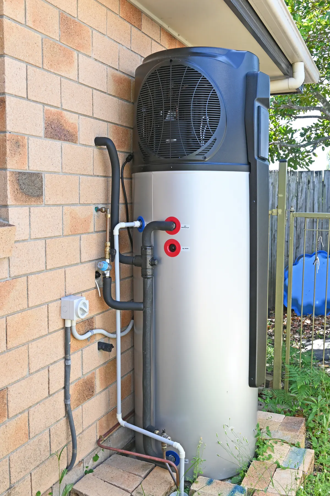

Are you looking to slash your energy bills and reduce your carbon footprint? A heat pump water heater might be the perfect solution for your home! These innovative systems are revolutionizing how we get hot water, offering significant energy savings compared to traditional electric or gas models. But to truly maximize their efficiency, it's crucial to understand how they work and, more specifically, why they perform best in the warmest spots in your house.
The Magic of Heat Transfer: How Heat Pump Water Heaters Work
Unlike conventional water heaters that generate heat directly (think of an electric coil or a gas flame), heat pump water heaters operate by transferring heat. They function much like a refrigerator, but in reverse. A fan pulls in ambient air from the surrounding space and blows it over evaporator coils filled with a refrigerant. This refrigerant absorbs the heat from the air, turning into a warm gas. A compressor then increases the pressure and temperature of this gas, which then moves through condenser coils, transferring its heat to the water in the storage tank. Once cooled, the refrigerant returns to the evaporator coils, and the cycle continues.
This process of moving existing heat rather than creating it is what makes heat pump water heaters so incredibly energy-efficient – often two to three times more efficient than standard electric resistance water heaters!

The Temperature Connection: Why External Air Matters
Here's the key: a heat pump water heater's efficiency is directly tied to the temperature of the air it's drawing from. The warmer the ambient air, the less work the heat pump has to do to extract heat, and thus, the more efficiently it operates.
Think of it like this: it's much easier to gather warmth from a slightly warm room than from a freezing cold one. When the air temperature is higher, there's more thermal energy available for the refrigerant to absorb. This translates to less electricity consumed by the compressor and faster, more efficient water heating.
Most manufacturers recommend installing heat pump water heaters in locations where temperatures consistently remain between 40°F and 90°F. While they can operate outside this range, their efficiency will decrease, and in very cold conditions, they may rely more on auxiliary electric resistance heating elements, which negates some of their energy-saving benefits.
The Hottest Spots for Maximum Performance
Given their reliance on ambient air temperature, the ideal locations for installing a heat pump water heater are spaces in your home that tend to be naturally warmer or have a source of waste heat. Consider these prime spots:
- Unfinished Basements: Often warmer than the outdoors and typically have ample air volume (many units require at least 1,000 cubic feet of air space).
- Garages (especially in warmer climates): Provide good airflow and can benefit from the cooling effect the water heater produces. In cooler climates, ensure the garage doesn't get too cold.
- Utility Rooms or Furnace Rooms: These spaces often have higher ambient temperatures due to other appliances generating heat (like your furnace!). The heat pump water heater can effectively "scavenge" this waste heat, boosting its efficiency.
- Other Semi-Conditioned Spaces: Areas that are generally warmer than outside but not part of your main living space (where the cooling effect might be noticeable) can be excellent choices.
It's also worth noting that heat pump water heaters do produce some cool exhaust air and a slight humming noise (comparable to a dishwasher), so it's generally best to avoid installing them in frequently occupied living areas or bedrooms.
Ready to Save? Ask Angle Stop Plumbing!
The long-term savings from a heat pump water heater can be substantial, often hundreds of dollars annually on your energy bills. Over the lifespan of the unit (typically 10-15 years), these savings can really add up.
To get a clear picture of the potential savings for your home and to ensure a proper, efficient installation, we highly recommend reaching out to a trusted local plumbing professional like Angle Stop Plumbing. They can assess your specific needs, recommend the right heat pump water heater for your household size and hot water demands, and provide an accurate estimate of the installation costs and the energy savings you can expect to realize.
Don't let outdated water heating technology drain your wallet. Embrace the efficiency of a heat pump water heater and start enjoying consistent hot water and lower energy bills today!